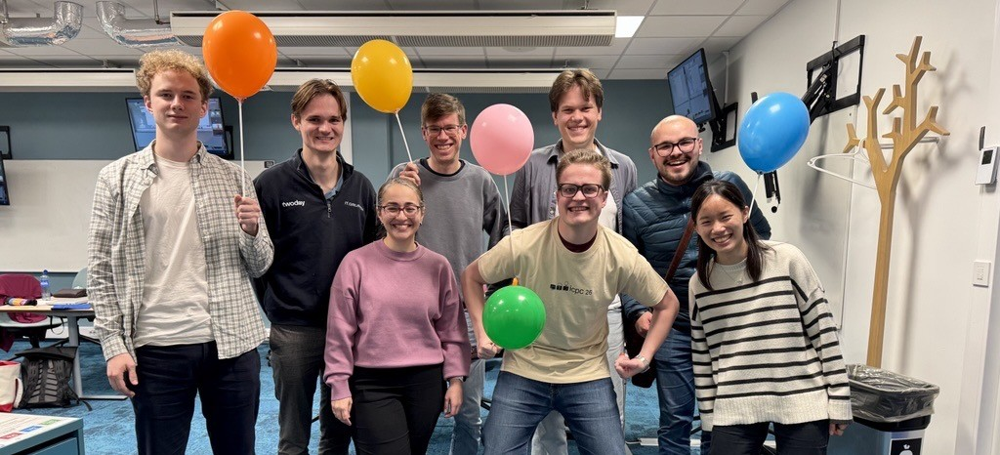
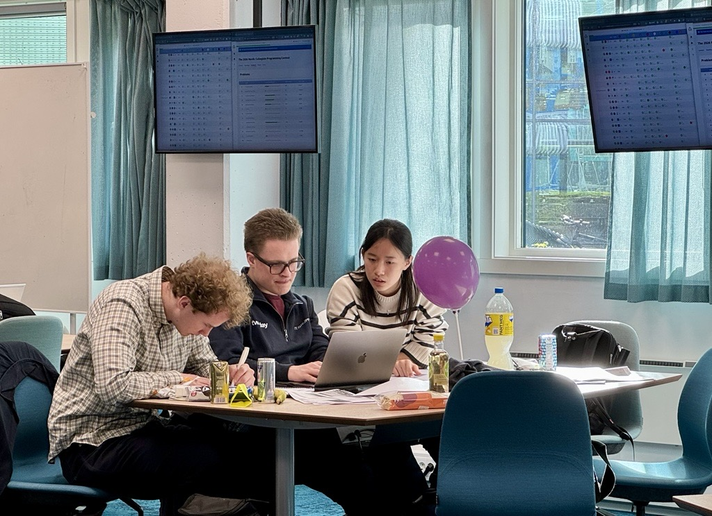
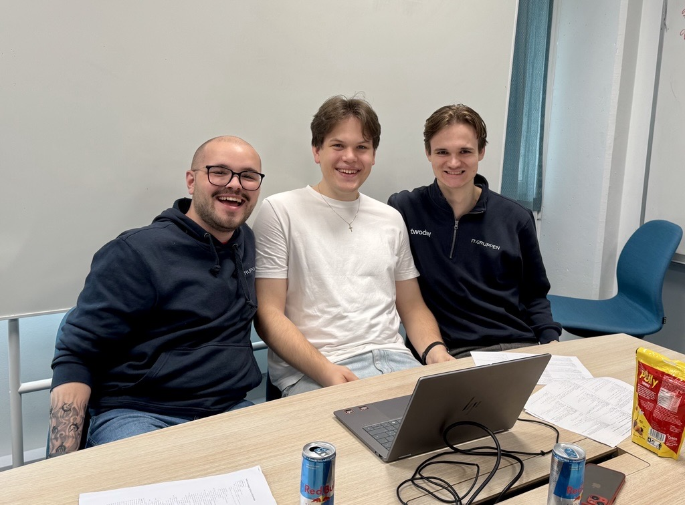

Two NHH Teams @NCPC 2026
On 3 October, two teams from NHH participated in NCPC, an annual programming competition aimed at university and college students from the Nordic and Baltic countries.


FLTR: Jakob Myrbakk (BØA), Nikolai Helleseth (BEDS), Paloma de Lima, Lars Jaffke, Torkil Tallberg (BEDS), Eivind Vestgarden (BEDS), Kenan Viteskic (MØA), You-Syuan Hou (Exchange)Coming from several study programs, the two NHH teams got together through NHH Code and took on the challenge of solving as many programming problems as possible in five hours. Both teams delivered strong performances, attesting to the growing programming culture at NHH.
NCPC is the qualifier for NWERC, the first stage of the prestigious International Collegiate Programming Contest (ICPC). Both teams started their preparations for NWERC, which happens end of November. We are cheering for them!

